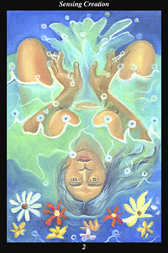

 | IMAGE:A female warrior is naked, immersed in water and surrounded by flowers. A wellspring of water rises from between her hands. The water drops are drawn as beads of jade in order to portray the precious nature of that which sustains life. |